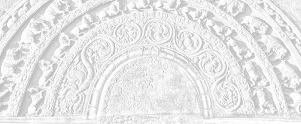

Sermon 3
Namo tassa bhagavato arahato sammāsambuddhassa
Namo tassa bhagavato arahato sammāsambuddhassa
Namo tassa bhagavato arahato sammāsambuddhassaEtaṁ santaṁ, etaṁ paṇītaṁ,
yadidaṁ sabbasaṅkhārasamatho sabbūpadhipaṭinissaggo
taṇhakkhayo virāgo nirodho nibbānaṁ.1“This is peaceful, this is excellent,
namely the stilling of all preparations, the relinquishment of all assets,
the destruction of craving, detachment, cessation, extinction.”
With the permission of the Most Venerable Great Preceptor and the assembly of the venerable meditative monks.
Today we have before us the third sermon on Nibbāna. The other day, with the help of the simile of a whirlpool, we attempted an explanation of the terms saṁsāra on the one hand, and Nibbāna on the other, that is to say ‘going round’, or saṁsaraṇa, and ‘going out’, or nissaraṇa.2 We also cited suttas to illustrate both the arising (samudaya) and cessation (nirodha) aspects of the law of dependent arising.
As regards this whirlpool, to show a parallel development with the links of the law of dependent arising, by way of a sustained simile, we may say that the ignorance in presuming that it is possible to go against the main stream of the three signata – impermanence, suffering and not-self – is the place of its origin. That heap of preparations impelled by ignorance, which takes the current forward, may be regarded as saṅkhāras. And where the current in its progress clashes with the main stream to become a whirlpool, that pushing forward against the main stream is viññāṇa or consciousness.
The outcome of the clash is nāma-rūpa, or name-and-form, with its formal name and nominal form. That link in the formula of dependent arising called saḷāyatana, or six sense-bases, could be regarded as the outgrowth of this name-and-form.We can understand that link, too, in relation to the simile of the whirlpool. As the whirlpool goes on for a long time, an abyss is formed, the functioning of which could be compared to the six sense-bases.
As a matter of fact, bodily pains are comparable to an abyss. In a certain sutta in the Saṁyutta Nikāya the Buddha says:
Sārīrikānaṁ kho etaṁ bhikkhave dukkhānaṁ vedanānaṁ adhivacanaṁ, yadidaṁ pātālo’ti.3
Monks, abyss is a synonym for painful bodily feelings.
When one comes to think about that statement, it would appear that the thirst of craving arises in beings in various forms of existence because of painful feeling. The Sallattenasutta adds to this by stating that the uninstructed worldling, on being touched by painful feeling, delights in sense pleasures, because he knows no way out of painful feeling other than the sense pleasures.4
In the light of that statement it seems that the abyss is the endless barrage of painful feelings. The force of attraction that arises from the abyss is like the thirst to quell those painful feelings. The grasping that follows is the functioning of the same force of attraction. It attracts all the flotsam and jetsam around it, as things organically appropriated, upādinna, to put up a show of existence, or bhava. That is, a spot that can be pointed out with the help of things thus grasped by the whirlpool. So this whirlpool or vortex simile gives us some idea of the law of dependent arising.
The insight into the basic principle of dependent arising, is in fact regarded as the arising of the ‘eye of Dhamma’. About the stream-winner it is said that the dustless stainless eye of Dhamma has arisen in him. The following phrase, which sums up the significance of that Dhamma-eye, comes up quite often in the discourses:
Yaṁ kiñci samudayadhammaṁ sabbaṁ taṁ nirodhadhammaṁ.5
Whatever is of a nature to arise, all that is of a nature to cease.
Sometimes it is briefly alluded to with the couple of terms samudaya and nirodha, as samudayo samudayo and nirodho nirodho.6 It is as if the experience of that insight has found expression as an exclamation: “Arising, arising! Ceasing, ceasing!” The above phrase only connects up the two aspects of that experience.
It seems then that what is called the ‘Dhamma-eye’, is the ability to see the Nibbānic solution in the very vortex of the saṁsāric problem. That way of analysis which puts saṁsāra and Nibbāna far apart, into two watertight compartments, as it were, gives rise to interminable problems. But here we see that, just as much as one could realize Nibbāna by discovering the cause of suffering and following the path to its cessation, which in effect is the understanding of the four noble truths, one could also put an end to this vortex by understanding its cause and applying the correct means for its cessation.
In the previous sermon we happened to quote some Canonical verses, which declared that the vortex does not exist for an arahant.7 Now as regards the condition after the cessation of the vortex, if someone asks where the vortex or the whirlpool has gone, what sort of answer can we give? It is the same difficulty that comes up in answering the question: “Where has the fire gone after it has gone out?” Because here too, what we call the whirlpool is that current of water which went against the main stream. It also consists of water, like the body of water outside it. So we cannot say that they united, nor can we say that it went and hid somewhere.
Here we find ourselves in a queer situation. All we can say in fairness to truth is that there had been a certain form of activity, a certain state of unrest, due to certain causes and conditions. Because of that activity that was going on there, it was possible to designate it, to give it a name. By worldly convention one could refer to it as ‘that place’ or ‘this place’.
The entire field of activity was called a whirlpool by worldly convention. But now, the so-called whirlpool is no more. The worldly convention is no more applicable as in the case of an extinguished fire. The word ‘fire’ was introduced, the concept of ‘fire’ was created, to designate a certain state of affairs that arose due to causes and conditions, due to graspings. So from this also we can see that it is in concepts that ignorance finds a camouflage.
Being unaware of it the world goes on amassing concepts and even expects to see them in Nibbāna. There are some who fondly hope to get a vision of their lists of concepts when they realize Nibbāna. But that wisdom penetrates through even the concepts and that is why it is called udayatthagāminī paññā ariyā nibbedhikā,8 “the ariyan penetrative wisdom that sees the rise and fall”.
The idea of penetration is already implicit in the phrase yaṁ kiñci samudayadhammaṁ sabbaṁ taṁ nirodhadhammaṁ, “whatever is of a nature to arise, all that is of a nature to cease”. If anything has the nature to arise, by that very nature it is bound to come to its end. And that is why the wandering ascetic Upatissa, who was to become Venerable Sāriputta later, attained the fruit of a stream-winner even on hearing the first two lines of the verse uttered by Venerable Assaji:
Ye dhammā hetuppabhavā, tesaṁ hetuṁ tathāgato āha.9
Of things that arise from a cause, their cause the Tathāgata has told.
When a wise man hears that something has arisen due to causes and conditions, he immediately understands that it could be made to cease by the removal of those conditions, even without further explanation. It is the dustless stainless Dhamma-eye that enables one to see the Nibbānic solution in the very structure of the saṁsāric problem.
In our quotation from the Mahānidānasutta it was said that all pathways for verbal expression, terminology and designation exist so long as the vortex of saṁsāra is kept going.10 The implication, therefore, is that they have no existence beyond it. This is the significance of the word ettāvatā, “in so far only”.
Ettāvatā jāyetha vā jīyetha vā mīyetha vā cavetha vā upapajjetha vā..11
In so far only can one be born, or grow old, or die, or pass away, or reappear.
So the concepts of birth, decay-and-death, passing away and reappearing, are meaningful only in the context of the saṁsāric vortex between consciousness and name-and-form. If somehow or other this interrelation could be broken, this saṁsāric vortex, the whirlpool, could be stopped, then, after that, nothing remains to be said, nothing remains to be predicated. And as it is said in the Upasīvasutta of the Sutta Nipāta:
Yena naṁ vajju, taṁ tassa natthi12
that by which they would speak of him, that for him exists not.
There are a number of Canonical passages that show us the relevance of this vortex simile to the understanding of the doctrine of paṭicca samuppāda. In the Mahāpadānasutta of the Dīgha Nikāya we find a lengthy description of the manner in which the bodhisatta Vipassī got an insight into paṭicca samuppāda. We are told that his mode of approach was one of radical reflection, or yoniso manasikāra, literally: “attention by way of the matrix”. One might as well say that it is an attention by way of the vortex. It is as if a man with keen vision, sitting under a tree by a river, were to watch how a fallen leaf gets carried away by the water current, only to get whirled up and disappear in a vortex.
It is clearly stated in the case of Vipassī bodhisatta that his understanding through wisdom came as a result of ‘radical reflection’, yoniso manasikārā ahu paññāya abhisamayo.13 So his insight into paṭicca samuppāda was definitely not due to recollection of past lives. Yoni means the ‘matrix’, or the ‘place of origin’. So in yoniso manasikāra always the attention has to turn towards the place of origin.
So, true to this method, we find the bodhisatta Vipassī starting his reasoning from the very end of the paṭicca samuppāda formula:
Kimhi nu kho sati jarāmaraṇaṁ hoti, kiṁ paccayā jarāmaraṇaṁ?
Given what, does decay-and-death come to be, from which condition comes decay-and-death?
And to this question, the following answer occurred to him:
Jātiyā kho sati jarāmaraṇaṁ hoti, jātipaccayā jarāmaraṇaṁ.
Given birth, does decay-and-death come to be, from birth as condition comes decay-and-death.
In the same manner, taking pair by pair, he went on reasoning progressively. For instance his next question was:
Kimhi nu kho sati jāti hoti, kiṁ paccayā jāti?
Given what, does birth come to be, from which condition comes birth?
And the answer to it was:
Bhave kho sati jāti hoti, bhavapaccayā jāti.
Given becoming, birth comes to be, from becoming as condition comes birth.
He went on reasoning like this up to and including name-and-form. But when he came to consciousness, he had to turn back. When he searched for the condition of consciousness, he found that name-and-form itself is the condition, whereby he understood their interdependence, and then he gave expression to the significance of this discovery in the following words:
Paccudāvattati kho idaṁ viññāṇaṁ nāmarūpamhā, nāparaṁ gacchati. Ettāvatā jāyetha vā jīyetha vā mīyetha vā cavetha vā upapajjetha vā, yadidaṁ nāmarūpapaccayā viññāṇaṁ, viññāṇapaccayā nāmarūpaṁ, nāmarūpapaccayā saḷāyatanaṁ, saḷāyatanapaccayā phasso, phassapaccayā vedanā, vedanāpaccayā taṇhā, taṇhāpaccayā upādānaṁ, upādānapaccayā bhavo, bhavapaccayā jāti, jātipaccayā jarāmaraṇaṁ sokaparidevadukkhadomanassūpāyāsā sambhavanti. Evametassa kevalassa dukkhakkhandhassa samudayo hoti.
By means of radical reflection the bodhisatta Vipassī understood that all concepts of birth, decay-and-death converge on the relationship between consciousness and name-and-form:
This consciousness turns back from name-and-form, it does not go beyond. In so far can one be born, or grow old, or die, or pass away, or reappear, in so far as this is, namely: consciousness is dependent on name-and-form, and name-and-form on consciousness; dependent on name-and-form, the six sense-bases; dependent on the six sense-bases, contact; dependent on contact, feeling; dependent on feeling, craving; dependent on craving, grasping; dependent on grasping, becoming; dependent on becoming, birth; and dependent on birth, decay-and-death, sorrow, lamentation, pain, grief and despair come to be. Thus is the arising of this entire mass of suffering.
The fact that this understanding of paṭicca samuppāda signified the arising of the Dhamma-eye in Vipassī bodhisatta is stated in the following words:
Samudayo samudayo’ti kho, bhikkhave, Vipassissa bodhisattassa pubbe ananussutesu dhammesu cakkhum udapādi, ñāṇaṁ udapādi, paññā udapādi, vijjā udapādi, āloko udapādi.
‘Arising, arising’, thus, O! monks, in regard to things unheard of before, there arose in the bodhisatta Vipassī the eye, the knowledge, the wisdom, the science, the light.
In the same way it is said that the bodhisatta clarified for himself the cessation aspect through radical reflection:
Kimhi nu kho asati jarāmaraṇaṁ na hoti, kissa nirodhā jarāmaraṇaṁ nirodho?
In the absence of what, will decay-and-death not be, with the cessation of what, is the cessation of decay-and-death?
And as the answer to it, the following thought occurred to him:
Jātiyā kho asati jarāmaraṇaṁ na hoti, jātinirodhā jarāmaraṇaṁnirodho.
In the absence of birth, there is no decay-and-death, with the cessation of birth is the cessation of decay-and-death.
Likewise he went on reflecting progressively, until he reached the link between name-and-form and consciousness, and then it occurred to him:
Nāmarūpanirodhā viññāṇanirodho, viññāṇanirodhā nāma-rūpanirodho.
From the cessation of name-and-form comes the cessation of consciousness, from the cessation of consciousness comes the cessation of name-and-form.
Once this vital link is broken, that is, when consciousness ceases with the cessation of name-and-form, and name-and-form ceases with the cessation of consciousness, then all the other links following name-and-form, such as the six sense-bases, contact and feeling, come to cease immediately.
The Mahāpadānasutta goes on to say that the bodhisatta Vipassī continued to dwell seeing the arising and passing away of the five grasping groups and that before long his mind was fully emancipated from the influxes and that he attained to full enlightenment. It is also said in the sutta in this connection that the bodhisatta followed this mode of reflection, because he understood that it is the way of insight leading to awakening:
Adhigato kho myāyaṁ vipassanā maggo bodhāya.
I have found this path of insight to awakening, to enlightenment.
And as we saw above the most important point, the pivotal point, in this path of insight, is the relationship between name-and-form and consciousness. The commentary raises the question, why the bodhisatta Vipassī makes no mention of the first two links, avijjā and saṅkhārā, and gives the explanation that he could not see them, as they belong to the past.14
But this is not the reason. The very ignorance regarding the relationship between name-and-form and consciousness – is avijjā. And what accounts for the continuity of this relationship – is saṅkhārā. It is because of these preparations that the vortical interplay between consciousness and name-and-form is kept going.
Simply because the first two links are not mentioned in the sutta, the commentators give the explanation that they belong to the past. But it should be clear that the bodhisatta Vipassī could not have aroused the Dhamma-eye without those two links. Why they are not specially mentioned here is because they are in the background. It is true that there is a mode of exposition, in which avijjā, or ignorance, takes precedence. But what we have here is a different mode of exposition, according to which one has to stop short at the interrelation between consciousness and name-and-form.
As to the cause of this mutual relationship, we have to go back to the vortex simile. Usually, the progress of a current of water is visible at some distance away from the vortex. In this case, the current of water forgets its own impermanent, suffering and not-self nature, and goes ahead in search of a permanent, pleasurable and self nature. And this itself – is avijjā, or ignorance. This very tendency of the narrow water current to push on against the main body of water, is itself what is called consciousness.
Similarly, in the context of the saṁsāric individual, what forms the background for the interplay between consciousness and name-and-form, is the non-understanding that the net result of the interplay is suffering, that it only leads to suffering. In other words, it is the tendency to go ahead in search of a state of permanence, pleasure and self, ignoring the three characteristics of impermanence, suffering and not-self.
The heap of preparations or efforts arising out of that tendency are the saṅkhārās. It is on these very preparations or efforts that consciousness depends, and then we have name-and-form existing in relation to it. On the side of name-and-form, or beyond it, we have all the other links of the paṭicca samuppāda. So in this way we can form a mental picture of the formula of paṭicca samuppāda by some sort of a pictorial explanation. It seems, then, that this discourse is further proof of the statements found in the Mahānidānasutta.
There is yet another discourse, one preached by Venerable Sāriputta, which supports our conclusions. It is found in the Nidānasaṁyutta of the Saṁyutta Nikāya. There Venerable Sāriputta brings out a simile that is even simpler than the vortex simile. He compares consciousness and name-and-form to two bundles of reeds. When two bundles of reeds stand, one supporting the other, if one of those is drawn out, the other would fall down. And if the latter is drawn out, the former will fall down:
Ekaṁ ākaḍḍheyya, ekā papateyya, aparaṁ ce ākaḍḍheyya, aparā papateyya.15
The mutual interrelation between consciousness and name-and-form is like that of two bundles of reeds, mutually supporting each other. Having given this simile, Venerable Sāriputta goes on to mention the other links of the paṭicca samuppāda formula, as in the case of the bodhisatta Vipassī’s insight. It runs: “Dependent on name-and-form, the six sense-bases; dependent on the six sense-bases, contact; dependent on contact, feelings” (and so on). And then the cessation aspect of these links is also given.
By way of illustration, let us suppose that the consciousness bundle of reeds is standing on the left side, and the name-and-form bundle is on the right. Then we have a number of other bundles, such as the six sense-bases, contact and feeling, all leaning on to the name-and-form bundle of reeds. These are all dependent on the name-and-form bundle.
Now, as soon as the consciousness bundle is drawn out, all the others on the right side fall down immediately. There is no interval. True to the qualities of the Dhamma, summed up in the terms sandiṭṭhika, akālika and ehipassika, that is, to be seen here and now, not involving time, and inviting to come and see, the entire mass of saṁsāric suffering ceases immediately. So, this discourse is further proof of the fact that we have here quite a different state of affairs, than what is commonly believed to be the significance of the paṭicca samuppāda formula.
That is why we have pointed out that the concepts of birth, decay-and-death are of the nature of fading away. That is also why decay-and-death have been described as impermanent, made up, dependently arisen, of a nature to wither away, pass away, fade away and cease:
Aniccaṁ saṅkhataṁ paṭiccasamuppannaṁ khayadhammaṁ vayadhammaṁ virāgadhammaṁ nirodhadhammaṁ.16
When one comes to think of it, one may find it difficult to understand why decay-and-death are called impermanent and withering or decaying. But the reason is that all concepts, in so far as they are leaning on to the name-and-form bundle, have to fall down when the opposite bundle of reeds is drawn out. That is to say that the entire mass of saṁsāric suffering ceases immediately, and the whirlpool of saṁsāra comes to an end.
This, then, seems to be the most plausible conclusion. According to the interpretation we have adopted, in the Mahāhatthipadopamasutta of the Majjhima Nikāya Venerable Sāriputta brings out as a quotation a certain statement of the Buddha on paṭicca samuppāda. It runs:
Yo paṭiccasamuppādaṁ passati so dhammaṁ passati; yo dhammaṁ passati so paṭiccasamuppādaṁ passati.17
He who sees the law of dependent arising, sees the Dhamma; he who sees the Dhamma, sees the law of dependent arising.
This shows that the quintessence of the Dhamma is in fact the law of dependent arising itself. Now there are these six qualities of the Dhamma, summed up in the well know formula, which every Buddhist believes in. This Dhamma is well-preached, svākkhāto. It can be seen here and now, sandiṭṭhiko, that is, one can see it by oneself here in this very world. It is timeless, akāliko. It invites one to come and see, ehipassiko. It leads one on, opanayiko. It can be realized by the wise each one by himself, paccattaṁ veditabbo viññūhi.18
Though we all have faith in these qualities of the Dhamma, let us see whether the traditionally accepted interpretation of paṭicca samuppāda is faithful to these qualities, particularly to the two qualities sandiṭṭhiko and akāliko.
According to that accepted interpretation, presented by the venerable author of the Visuddhimagga, the first two links of the formula belong to the past, and the last two links belong to the future. The remaining eight links in the middle are taken to represent the present.19 That means, we have here the three periods of time. So it is not – timeless.
And that is why they explained that the bodhisatta Vipassī did not see the first two links. Perhaps, the presumption is, that since these two links belong to the past, they can be seen only by the knowledge of the recollection of past lives. But on the other hand, the suttas tell us that even the stream-winner has a clear understanding of paṭicca samuppāda:
Ariyo c’assa ñāyo paññāya sudiṭṭho hoti suppaṭividdho.20
By him the Noble Norm is well seen and well penetrated through with wisdom.
The ‘noble norm’ is none other than the law of dependent arising, and the stream-winner has seen it well, penetrated into it well with wisdom. The prefix su- implies the clarity of that vision. The question, then, is how a stream-winner, who has no knowledge of the recollection of past lives, can get this insight.
Whatever it may be, the accepted interpretation, as already mentioned, puts the first two links into the past. That is to say, ignorance and preparations are referred to the past. Birth, decay-and-death are referred to the future. The eight links in between are explained with reference to the present. Thus the formula is divided into three periods.
Not only that, in the attempt to interpret the formula as referring to three stages in the saṁsāric journey of an individual, additional links had to be interposed to prop up the interpretation.21 Ignorance, preparations, craving, grasping and becoming are regarded as the past causes. Depending on these past causes, consciousness, name-and-form, six sense-bases, contact and feeling are said to arise as results in the present. And again, with ignorance, preparations, craving, grasping and becoming as present causes, consciousness, name-and-form, six sense-bases, contact and feeling arise as results in the future.
This kind of interpretation is also advanced. But this interpretation in terms of pentads violates the interrelatedness between the twelve links in the formula. We have already drawn attention to the fact of interrelation between the two links in each pair. In fact, that itself has to be taken as the law of dependent arising. That is the basic principle itself: Because of one, the other arises. With its cessation, the other ceases. There is this mode of analysis, but then it is disrupted by the attempt to smuggle in additional links into the formula.
Furthermore, according to this accepted commentarial exegesis, even the term bhava, or becoming, is given a twofold interpretation. As kamma-process-becoming and rebirth-process-becoming. In the context upādānapaccaya bhavo, dependent on grasping is becoming, it is explained as rebirth-process-becoming, while in the case of the other context, bhavapaccaya jāti, dependent on becoming is birth, it is taken to mean kamma-process-becoming. So the same term is explained in two ways. Similarly, the term jāti, which generally means birth, is said to imply rebirth in the context of the formula of dependent arising.
There are many such weak points in the accepted interpretation. Quite a number of authoritative modern scholars have pointed this out. Now all these short-comings could be side-tracked, if we grant the fact, as already mentioned, that the secret of the entire saṁsāric vortex is traceable to the two links consciousness and name-and-form. As a matter of fact, the purpose of the formula of dependent arising is to show the way of arising and cessation of the entire mass of suffering, and not to illustrate three stages in the saṁsaric journey of an individual.
The distinctive feature of this law of dependent arising is its demonstrability in the present, as suggested by the terms ‘to be seen here and now’ and ‘timeless’, even as the bodhisatta Vipassī discovered it, through radical reflection itself. The salient characteristic of the teaching of the Buddha is its visibility here and now and timelessness. This fact is well revealed by the Hemakasutta of the Sutta Nipāta. The brahmin youth Hemaka sings praise of the Buddha in the following verses:
Ye me pubbe viyākaṁsu,
huraṁ Gotamasāsanā,
iccāsi iti bhavissati,
sabbaṁ taṁ itihītihaṁ,
sabbaṁ taṁ takkavaḍḍhanaṁ,
nāhaṁ tattha abhiramiṁ.Tvañca me dhammam akkhāhi,
taṇhā nigghātanaṁ muni,
yaṁ viditvā sato caraṁ,
tare loke visattikaṁ.22Those who explained to me before,
Outside the dispensation of Gotama,
All of them said: ‘so it was, and so it will be’,
But all that is ‘so and so’ talk,
All that is productive of logic,
I did not delight therein.But now to me, O! sage,
Proclaim your Dhamma,
That is destructive of craving,
By knowing which and mindfully faring along,
One might get beyond the world’s viscosity.
Now, to paraphrase: Whatever teachers explained to me their teachings outside your dispensation, used to bring in the past and the future in their explanations, saying: “So it was, and so it will be.” That is, they were always referring to a past and a future. But all that can be summed up as ‘so and so’ talk.
By the way, the term itihītiha had already become a technical term for ‘hearsay’ among the ascetics. Such teachings based on hearsay were productive of logic, as for instance testified by the Sabbāsavasutta of the Majjhima Nikāya.
Was I in the past, was I not in the past? What was I in the past? How was I in the past? Having been what, what did I become in the past? Shall I be in the future? Shall I not be in the future? What shall I be in the future? How shall I be in the future? Having been what, what shall I become in the future? (and so on)23
“But, I was not pleased with such teachings”, says Hemaka, “It is only you, O! sage, who teaches the Dhamma that destroys the craving in the present, understanding which, and mindfully following it accordingly, one could go beyond the sticky craving in the world.” Hemaka’s praise of the Buddha was inspired by this most distinctive feature in the Dhamma.
We have already stated that by ‘Dhamma’ is meant the law of dependent arising. This is further proof that the basic principle underlying the formula of dependent arising could be traced to the constant relationship between consciousness and name-and-form, already present in one’s mental continuum, without running into the past or leaping towards the future.
We know that, in order to ascertain whether a banana trunk is pith-less, it is not necessary to go on removing its bark, layer after layer, from top to bottom. We only have to take a sharp sword and cut the trunk in the middle, so that the cross-section will reveal to us its pith-less nature. Similarly, if we cut in the middle the banana trunk of preparations with the sharp sword of wisdom, paññāmayaṁ tikhiṇamasiṁ gahetvā,24 its internal structure as revealed by the cross-section will convince us of the essence-less nature of the group of preparations.
Whatever existence there was in the past, that too had the same essence-less nature. And whatever existence there will be in the future, will have this same essencelessness. And I see it now, in my own mental continuum, as something visible here and now, not involving time. It is with such a conviction that the noble disciple utters the words: “Arising, arising! Cessation, cessation!” That is how he arrives at the realization summed up in the phrase:
Yaṁ kiñci samudayadhammaṁ, sabbaṁ taṁ nirodhadhammaṁ.25
Whatever is of the nature to arise, all that is of the nature to cease.
All this goes to show that the accepted interpretation has certain short-comings.
To take up another simile, we have already alluded to the fact that the Buddha has been compared to a physician.26 Though this might well sound a modernism, we may say that a specialist doctor today needs only a drop of blood or blood tissue for a full diagnosis of a patient’s disease. When seen under the microscope, that blood tissue reveals the pathological condition of the patient. Even the patient himself could be invited to see for himself the result of the blood test.
But once the disease has been cured, the doctor could invite the patient again to undergo a blood test, if he likes to assure himself of the fact that that disease has been effectively treated. The Buddha’s teaching has a similar ‘here and now’ and timeless quality. What is noteworthy is that this quality is found in the law of dependent arising.
Then there is another question that crops up out of this traditional interpretation of the formula of dependent arising. That is, the reason why the two links, ignorance and preparations, are referred to the past.
In some discourses, like the Mahānidānasutta, there is a discussion about a descent of consciousness into a mother’s womb. Simply because there is such a discussion, one might think that the law of dependent arising has reference to a period beyond one’s conception in a mother’s womb.
But if we carefully examine the trend of this discussion and analyse its purpose, such a conclusion will appear to be groundless. The point which the Buddha was trying to drive home into Venerable Ānanda by his catechism, is that the constant interrelation that exists between consciousness and name-and-form is present even during one’s life in the mother’s womb. This catechism can be analysed into four parts. The first question is:
Viññāṇaṁ va hi, Ānanda, mātukucchismiṁ na okkamissatha, api nu kho nāmarūpaṁ mātukucchismiṁ samuccissatha?27
And Venerable Ānanda’s answer is:
No h’etaṁ, bhante.
“If, Ānanda, consciousness were not to descend into a mother’s womb, would name-and-form remain there?”
“It would not, Lord.”
The Buddha is asking whether name-and-form can persist in remaining inside the mother’s womb, if consciousness refuses to descend into it, so to say. The word samuccissatha presents a difficulty as regards etymology. But it is quite likely that it has to do with the idea of remaining, as it has an affinity to the word ucciṭṭha, left over, remnant.
So the point raised here is that, in the event of a non-descent of consciousness into the mother’s womb, name-and-form will not be left remaining there. Name-and-form has to have the support of consciousness. However, in this interrelation, it is consciousness that decides the issue. If consciousness does not descend, name-and-form will not remain there.
So even if, at the moment of death, one has a thought of some mother’s womb, if consciousness does not descend in the proper manner, name-and-form cannot stay there. Name-and-form has always to be understood in relation to consciousness. It is not something that is to be found in trees and rocks. It always goes hand in hand with consciousness. So, the upshot of the above discussion is that name-and-form will not remain there without the support of consciousness.
Venerable Ānanda’s response to the first question, then, is:
“That indeed is not the case, O! Lord.”
Then the Buddha asks:
Viññāṇaṁ va hi, Ānanda, mātukucchismiṁ okkamitvā vokkamissatha, api nu kho nāmarūpaṁ itthattāya abhinibbattissatha?
“If, Ānanda, consciousness, having descended into the mother’s womb, were to slip out of it, would name-and-form be born into this state of existence?”
Venerable Ānanda’s reply to it is again:
“That indeed is not the case, Lord.”
Now the question is: Ānanda, if for some reason or other, consciousness, having descended into the mother’s womb, slips out of it, will name-and-form secure birth as a this-ness, or itthatta. We have mentioned above that itthatta is a term with some special significance.28 That is, how a ‘there’ becomes a ‘here’, when a person takes birth in a particular form of existence. In short, what it implies, is that a person comes to be born.
In other words, if consciousness, having descended into the mother’s womb, slips out of it, that name-and-form will not mature into a this-ness and be born into a this-ness. There is no possibility of the this-ness coming into being. For there to be a this-ness, both consciousness and name-and-form must be there. We can understand, then, why Venerable Ānanda replied in the negative.
The next question the Buddha puts, is this:
Viññāṇaṁ va hi, Ānanda, daharasseva sato vocchijjissatha kumārakassa vā kumārikāya vā, api nu kho nāmarūpaṁ vuddhiṁ virūḷhiṁ vepullaṁ āpajjissatha?
“If, Ānanda, the consciousness of a boy or a girl were cut off when he or she is still young, will name-and-form come to growth and maturity?”
To that question too, Venerable Ānanda replies:
“That indeed is not the case, Lord.”
Now that the preliminary questions have been correctly answered, the Buddha then comes out with the following conclusion, since the necessary premises are complete:
Tasmātih’Ānanda, es’ eva hetu etaṁ nidānaṁ esa samudayo esa paccayo nāmarūpassa, yadidaṁ viññāṇaṁ.
“Therefore, Ānanda, this itself is the cause, this is the reason, origin and condition for name-and-form, namely consciousness.”
What is emphasized here, is the importance of consciousness. Out of the two, namely consciousness and name-and-form, what carries more weight with it, is consciousness, even if there be a trace of name-and-form. What the above questionnaire makes clear, is that name-and-form arises in a mother’s womb because of consciousness. But that name-and-form will not remain there, if consciousness does not properly descend into the womb.
Also, if consciousness, after its descent, were to slip out, name-and-form will not reach the state of a this-ness. So much so that, even after one’s birth as a boy or girl, if consciousness gets cut off in some way or other, name-and-form will not reach growth and maturity. So from all this, it is clear that consciousness is an essential condition for there to be name-and-form. Then the Buddha introduces the fourth step:
Viññāṇaṁ va hi, Ānanda, nāmarūpe patiṭthaṁ na labhissatha, api no kho āyatiṁ jātijarāmaraṇaṁ dukkhasamudayasambhavo paññāyetha?
“If, Ānanda, consciousness were not to find a footing, or get established in, name-and-form, would there be an arising or origin of birth, decay, death and suffering in the future?”
“No indeed, Lord”, says Venerable Ānanda.
Now this fourth point is extremely important. What it implies is that, though the aforesaid is the normal state of affairs in saṁsāra, if for some reason or other consciousness does not get established on name-and-form, if at all such a contrivance were possible, there will not be any saṁsāric suffering again. And this position, too, Venerable Ānanda grants.
So from this discussion, too, it is obvious that, simply because there is a reference to a mother’s womb in it, we cannot conclude that ignorance and preparations are past causes. It only highlights the mutual relationship between consciousness and name-and-form.
Now the question that comes up next is: “How does consciousness not get established on name-and-form? In what respects does it not get established, and how?”
The consciousness of a saṁsāric individual is always an established consciousness. It is in the nature of this consciousness to find a footing on name-and-form. These two go together. That is why in the Sampasādanīyasutta of the Dīgha Nikāya it is mentioned in the discussion on the attainments to vision, dassanasamāpatti, that a person with such an attainment sees a man’s stream of consciousness that is not cut off on either side, established in this world and in the next:
Purisassa ca viññāṇasotaṁ pajānāti, ubhayato abbocchinnaṁ idha loke patiṭṭhitañca para loke patiṭṭhitañca.29
What is implied here is the established nature of consciousness. The consciousness of a saṁsāric individual is established both in this world and in the next.
Another attainment of vision, mentioned in the sutta, concerns the seeing of a man’s stream of consciousness not cut off on either side, and not established in this world or in the next. And that is a reference to the consciousness of an arahant. So an arahant’s consciousness is an unestablished consciousness, whereas the consciousness of the saṁsāric individual is an established consciousness.
That is precisely why in the Sagāthavagga of the Saṁyutta Nikāya and in the Sāratthapakāsinī, where the episode of Venerable Godhika’s suicide is mentioned, it is said that, though he cut his own neck intending to commit suicide, he was able to attain parinibbāna as an arahant by radically attending to the deadly pain.30 But Māra took him to be an ordinary person and hovered around in search of his consciousness – in vain. The Buddha, on the other hand, declared that Venerable Godhika passed away with an unestablished consciousness:
Appatiṭṭhitena ca, bhikkhave, viññāṇena Godhiko kulaputto parinibbuto.31
O! monks, the clansman Godhika passed away with an unestablished consciousness.
The consciousness of an ordinary saṁsāric individual is always established. The above mentioned relationship is always there. Because of this we can say that there is always a knot in the consciousness of the saṁsāric individual. For him, this world and the next world are tied together in a knot. In this case, what is needed, is only the untying of the knot. There is no need of a fresh tying up, as the knot is already there.
But the term paṭisandhi viññāṇa, or rebirth-linking-consciousness, is now so widely used that we cannot help making use of it, even in relating a Jātaka story. The idea is that, after the death-consciousness, there occurs a rebirth-linking-consciousness.
However, some scholars even raise the question, why a term considered so important is not to be found in the discourses. On many an occasion the Buddha speaks about the descent into a womb. But apart from using such terms as okkanti,32 descent, gabbhassa avakkanti,33 descent into a womb, and uppatti,34 arising, he does not seem to have used the term paṭisandhi.
What is meant by this term paṭisandhi? It seems to imply a tying up of two existences. After death there is a ‘relinking’. We have mentioned above, in connection with the simile of the bundles of reeds that, when the consciousness bundle of reeds is drawn, the name-and-form bundle of reeds falls. And when the name-and-form bundle of reeds is drawn, the consciousness bundle of reeds falls. And that there is a relationship of mutuality condition between them.
The question, then, is why a tying up is brought in, while granting the relationship by mutuality condition. Because, going by the same simile, it would be tantamount to saying that rebirth-linking-consciousness straightens up when death-consciousness falls, as if, when one bundle of reeds is drawn, the other straightens up. This contradicts the nature of mutuality condition. There is no timelessness here. Therefore paṭisandhi is a term that needs critical scrutiny.
The mental continuum of a saṁsāric being is always knotted with a tangle within and a tangle without.35 And it is already implicit in the relationship between consciousness and name-and-form. What happens at the dying moment is usually posed as a deep problem. But if we carefully examine the situation in the light of Canonical discourses, we could see here an illustration of the law of dependent arising itself.
Now as far as this established consciousness and the unestablished consciousness are concerned, we have already drawn attention to the relationship between a ‘here’ and a ‘there’. We came across the term itthatta, otherwise called itthabhāva.
As a rendering for it, we have used the term ‘this-ness’. And then we have already pointed out that this itthabhāva, or this-ness, goes hand in hand with aññatthābhāva, or otherwise-ness. That is to say, wherever a this-ness arises, wherever a concept of a something arises, as a rule that itself is the setting in of transformation or change.
This-ness and other-wiseness are therefore to be found in a pair-wise combination. Wherever there is a this-ness, there itself is an otherwise-ness. So in this way, because of the fact that, due to this this-ness itself, wherever this-ness arises, otherwise-ness arises, together with it, wherever there is a ‘there’, there is always a ‘here’. This, then, is how the consciousness of the saṁsāric being functions.
As far as one’s everyday life is concerned, what is called the conscious body, is the body with consciousness. Generally we regard this body as something really our own. Not only that, we can also objectify things outside us, beyond our range of vision, things that are objects of thought or are imagined. That is what is meant by the Canonical phrase:
Imasmiñca saviññāṇake kāye bahiddhā ca sabbanimittesu ahaṁkāra mamaṁkāra mānānusayā na honti.36
There are no latencies to conceit by way of I-making and mine-making regarding this conscious body and all outside signs.
What it implies, is that one can have latencies to conceit by way of I-making and mine-making regarding this conscious body as well as all outside signs. Now, if we consider the deeper implications of this statement, we can get at some new perspective for understanding the nature of the relationship between consciousness and name-and-form.
If someone, deeply attached to a person who is not near him, but living somewhere far far away, is heavily immersed in some deep thought, then, even if there is some painful contact, such as the prick of a fly, or the bite of a mosquito, or even if another comes and shakes him by the shoulder, he might not feel it, because he is so immersed in the thought.
Now, why is that? Normally, the rightful place for consciousness is this body. But what has happened now, is that it has gone away temporarily and united with the name-and-form outside, with that object far away. But it can be awakened. This is the way the mind travels.
It is due to a lack of clear understanding about the journey of the mind, that the concept of a relinking-consciousness was found to be necessary. The way the mind travels is quite different from the way the body travels. The journey of the body is a case of leaving one place to go to another. But the mind’s journey is not like that. It is a sort of whirling or turning round, as in the case of a whirlpool or a vortex.
That is to say, just as in the case of a rubber-band which could be stretched lengthwise or crosswise, there is a certain whirling round going on between consciousness and name-and-form. It is because of that whirling motion, which could either be circular or oval shaped, that consciousness and name-and-form could either get drawn apart, or drawn in, as they go round and round in a kind of vortical interplay.
So in a situation like the one mentioned above, for that person, the distant has become near. At the start, when he fell to thinking, it was a ‘there’ for him. Then it became a ‘here’. And the here became a ‘there’. This brings out, in a subtle way, the relevance of these concepts to the question of understanding such teachings as the law of dependent arising.
Concepts of a here and a there are in a way relative. They presuppose each other. Itthabhāva, this-ness, and aññathābhāva, otherwise-ness, referred to above, mean the same thing. Itthabhāva goes hand in hand with aññathābhāva. They are bound in a pair-wise combination. When you drag in one, the other follows of necessity. It is the same in the case of the relationship between birth on the one hand, and decay-and-death on the other, as already mentioned.
Also, consciousness and name-and-form always move in an orbit. It is not something like the journey of the body. Thought goes, but it rests on consciousness, it gravitates towards consciousness. It is because consciousness also has gone there that we say someone is ‘immersed’ or ‘engrossed’ in some thought. It is consciousness that carries more weight.
This is sufficiently clear even from the Dhamma discussion of the Buddha, quoted above. If consciousness does not descend into a mother’s womb, name-and-form will not remain there. If consciousness does not join in to provide the opportunity, it will not grow. This is the nature of the relationship between them.
Though not well authenticated, cases have been reported of persons, on the verge of death, going through such unusual experiences as visualizing their own body from some outside standpoint. Taking into consideration the above mentioned relationship, this is quite understandable. That external standpoint might not be a place which has the ability to sustain that consciousness, or which is capable of creating a new body out of the four primary elements. All the same, it temporarily escapes and goes there and is now wavering to decide, whether or not to come back to the body, as it were. It is on such occasions that one visualizes one’s own body from outside.
So here we have the norm of the mind’s behaviour. Seen in this way, there is no need for a fresh tying up, or relinking, because it is the same vortex that is going on all the time. In the context of this saṁsāric vortex, the ‘there’ becomes a ‘here’, and a ‘here’ becomes a ‘there’. The distant becomes a near, and a near becomes a distant.
It is owing to this state of affairs that the consciousness of the saṁsāric individual is said to be always established. There is a certain twin character about it. Whenever consciousness leaves this body for good, it goes and rests on a name-and-form object which it had already taken up. In other words, this is why the Buddha did not find it necessary to coin a new term to express the idea of conception in some mother’s womb.
Consciousness has as its object name-and-form. It is precisely because of consciousness that one can speak of it as a name-and-form. It is like the shadow that falls on consciousness. Name-and-form is like an image.
Now in taking a photograph, there is a similar turn of events. Even if one does not pose for the photograph with so much make-up, even if one turns one’s back to the camera, at least a shade of his shape will be photographed as an image, if not his form. Similarly, in the case of the saṁsāric individual, even if he does not entertain an intention or thought construct, if he has at least the latency, anusaya, that is enough for him to be reborn in some form of existence or other.
That is why the Buddha has preached such an important discourse as the Cetanāsutta of the Nidāna Saṁyutta in the Saṁyutta Nikāya. It runs:
Yañca, bhikkhave, ceteti yañca pakappeti yañca anuseti, ārammaṇam etaṁ hoti viññāṇassa ṭhitiyā. Ārammaṇe sati patiṭṭhā viññāṇassa hoti. Tasmiṁ patiṭṭhite viññāṇe virūḷhe nāmarūpassa avakkanti hoti. Nāmarūpapaccayā saḷāyatanaṁ, saḷāyatanapaccayā phasso, phassapaccayā vedanā, vedanāpaccayā taṇhā, taṇhāpaccayā upādānaṁ, upādānapaccayā bhavo, bhavapaccayā jāti, jātipaccayā jarāmaraṇaṁ sokaparidevadukkhadomanassūpāyāsā sambhavanti. Evametassa kevalassa dukkhakkhandhassa samudayo hoti.37
Monks, whatever one intends, whatever one mentally constructs, whatever lies latent, that becomes an object for the stationing of consciousness. There being an object, there comes to be an establishment of consciousness. When that consciousness is established and grown, there is the descent of name-and-form. Dependent on name-and-form the six sense-bases come to be; dependent on the six sense-bases arises contact; and dependent on contact arises feeling; dependent on feeling, craving; dependent on craving, grasping; dependent on grasping, becoming; dependent on becoming, birth; dependent on birth, decay-and-death, sorrow, lamentation, pain, grief and despair come to be. Such is the arising of this entire mass of suffering.
Then comes the second instance:
No ce, bhikkhave, ceteti no ce pakappeti, atha ce anuseti, ārammaṇam etaṁ hoti viññāṇassa ṭhitiyā. Ārammaṇe sati patiṭṭhā viññāṇassa hoti. Tasmiṁ patiṭṭhite viññāṇe virūḷhe nāmarūpassa avakkanti hoti. Nāmarūpapaccayā saḷāyatanaṁ, saḷāyatanapaccayā phasso, phassapaccayā vedanā, vedanāpaccayā taṇhā, taṇhāpaccayā upādānaṁ, upādānapaccayā bhavo, bhavapaccayā jāti, jātipaccayā jarāmaraṇaṁ sokaparidevadukkhadomanassūpāyāsā sambhavanti. Evametassa kevalassa dukkhakkhandhassa samudayo hoti.
Monks, even if one does not intend or construct mentally, but has a latency, that becomes an object for the stationing of consciousness. There being an object, there comes to be the establishment of consciousness. When that consciousness is established and grown, there is the descent of name-and-form. Dependent on name-and-form the six sense-bases come to be; dependent on the six sense-bases arises contact; and dependent on contact, feeling; dependent on feeling, craving; dependent on craving, grasping; dependent on grasping, becoming; dependent on becoming, birth; dependent on birth, decay-and-death, sorrow, lamentation, pain, grief and despair come to be. Such is the arising of this entire mass of suffering.
The significance of this second paragraph is that it speaks of a person who, at the time of death, has no intentions or thought constructs as such. But he has the latency. This itself is sufficient as an object for the stationing of consciousness. It is as if he has turned his back to the camera, but got photographed all the same, due to his very presence there. Now comes the third instance:
Yato ca kho, bhikkhave, no ceva ceteti no ca pakappeti no ca anuseti, ārammaṇam etaṁ na hoti viññāṇassa ṭhitiyā. Ārammaṇe asati patiṭthā viññāṇassa na hoti. Tadappatiṭṭhite viññāṇe avirūḷhe nāmarūpassa avakkanti na hoti. Nāmarūpanirodhā saḷāyatananirodho, saḷāyatananirodhā phassanirodho, phassanirodhā vedanānirodho, vedanānirodhā taṇhānirodho, taṇhānirodhā upādānanirodho, upādānanirodhā bhavanirodho, bhavanirodhā jātinirodho, jātinirodhā jarāmaraṇaṁ sokaparidevadukkhadomanassūpāyāsā nirujjhanti. Evametassa kevalassa dukkhakkhandhassa nirodho hoti.
But, monks, when one neither intends, nor constructs mentally, and has no latency either, then there is not that object for the stationing of consciousness. There being no object, there is no establishment of consciousness. When consciousness is not established and not grown up, there is no descent of name-and-form, and with the cessation of name-and-form, there comes to be the cessation of the six sense-bases; with the cessation of the six sense-bases, the cessation of contact; with the cessation of contact, the cessation of feeling; with the cessation of feeling, the cessation of craving; with the cessation of craving, the cessation of grasping; with the cessation of grasping, the cessation of becoming; with the cessation of becoming, the cessation of birth; with the cessation of birth, the cessation of decay-and-death, sorrow, lamentation, pain, grief and despair come to cease. Thus is the cessation of this entire mass of suffering.
This third instance is the most significant. In the first instance, there were the intentions, thought constructs and latency. In the second instance, that person had no intentions or thought constructs, but only latency was there. In this third instances, there is neither an intention, nor a thought construct, and not even a latency.
It is then that there comes to be no object for the stationing of consciousness. There being no object, there is no establishment of consciousness, and when consciousness is unestablished and not grown, there is no descent of name-and-form. Where there is no descent of name-and-form, there at last comes to be that cessation of name-and-form with which the six sense-bases, and all the rest of it, down to the entire mass of saṁsāric suffering, cease altogether then and there.